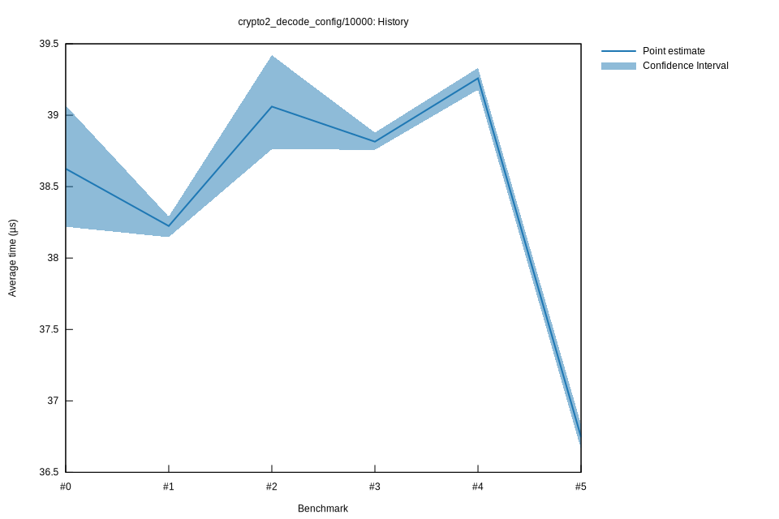

# 52022-10-16T20:11:33+03:00
|
Lower Bound |
Estimate |
Upper Bound |
| Value: |
36.66µs |
36.75µs |
36.83µs |
| Throughput: |
346.91MiB/s |
346.11MiB/s |
345.29MiB/s |
| Change in Value: |
-6.5564% |
-5.9079% |
-4.9915% |
| Change in Throughput: |
+7.0164% |
+6.2788% |
+5.2537% |
No change in performance detected.
# 42022-10-16T17:30:36+03:00
|
Lower Bound |
Estimate |
Upper Bound |
| Value: |
39.18µs |
39.26µs |
39.33µs |
| Throughput: |
324.62MiB/s |
323.96MiB/s |
323.36MiB/s |
| Change in Value: |
+0.3066% |
+0.5891% |
+0.8468% |
| Change in Throughput: |
-0.3056% |
-0.5856% |
-0.8397% |
No change in performance detected.
# 32022-10-15T17:21:18+03:00
|
Lower Bound |
Estimate |
Upper Bound |
| Value: |
38.76µs |
38.81µs |
38.88µs |
| Throughput: |
328.14MiB/s |
327.66MiB/s |
327.13MiB/s |
| Change in Value: |
-1.3932% |
-0.5798% |
+0.1761% |
| Change in Throughput: |
+1.4129% |
+0.5832% |
-0.1758% |
Change within noise threshold.
# 22022-10-15T16:55:30+03:00
|
Lower Bound |
Estimate |
Upper Bound |
| Value: |
38.76µs |
39.06µs |
39.42µs |
| Throughput: |
328.11MiB/s |
325.60MiB/s |
322.63MiB/s |
| Change in Value: |
+1.4042% |
+2.2114% |
+3.1059% |
| Change in Throughput: |
-1.3847% |
-2.1635% |
-3.0123% |
No change in performance detected.
# 12022-10-08T17:32:16+03:00
|
Lower Bound |
Estimate |
Upper Bound |
| Value: |
38.15µs |
38.22µs |
38.29µs |
| Throughput: |
333.41MiB/s |
332.73MiB/s |
332.15MiB/s |
| Change in Value: |
-0.1661% |
+0.6723% |
+1.4576% |
| Change in Throughput: |
+0.1664% |
-0.6678% |
-1.4366% |
Change within noise threshold.
# 02022-10-08T17:12:52+03:00
|
Lower Bound |
Estimate |
Upper Bound |
| Value: |
38.22µs |
38.63µs |
39.07µs |
| Throughput: |
332.77MiB/s |
329.27MiB/s |
325.54MiB/s |